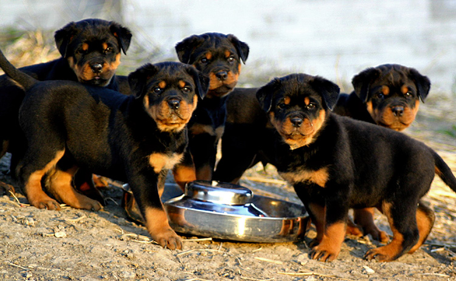

¿Cómo elegir el alimento para tu cachorro?
Que tener en cuenta para elegir el alimento que le dará a tu cachorro una nutrición completa y equilibrada para que se convierta en un gran perro.
Los alimentos para mascotas de bajo costo no le dan a tu perro una nutrición de primera calidad.
Cuando tu cachorro se siente bien por dentro, se nota por fuera, y lo demuestra todos los días con energía y un pelo brilloso.
Hay algunos signos que te indican si tu perro está sacando provecho de su alimento.
Dónde comprar
En Tienda de Mascotas te damos el asesoramiento experto sobre la alimentación de tu perro teniendo en cuenta su edad, el tamaño de la raza y las intolerancias.
Busca calidad
Revisa la lista de ingredientes para saber qué contiene realmente la comida de tu perro.
Busca la mejor relación precio-calidad
Para darle a tu perro alimento seco de alta calidad sigue las instrucciones detalladas. A partir de estos datos podrás calcular el número de comidas por kilo y la cantidad de raciones que rinde cada bolsa.
Haz una comparación tomando en cuenta lo que cuesta cada comida. Una bolsa de 15 kg de alimento seco puede parecer cara, pero quizá te permita alimentar a tu perro durante dos meses.
No cambies de comida
Con una comida completa y equilibrada tu perro no necesita nada más. Si tiene molestias estomacales, probablemente se trata de algo que comió afuera. No conviene cambiar de dieta o de suplemento si no lo recomienda el veterinario.
Como recompensa o para jugar, puedes darle golosinas especiales para perros.
La comida enlatada puede contener hasta un 80% de agua y hay que consumirla en poco tiempo una vez abierta.
El alimento seco de gran calidad contiene menos del 10% de agua, es muy digerible, práctico y se mantiene fresco varias semanas después de abrir la bolsa.
¿Cómo leer las etiquetas?
Te lleva menos de un minuto leer la etiqueta de un alimento para perros, pero la información que refleja es esencial para tu decisión de compra.
El nombre del alimento da indicios sobre qué cantidad de un ingrediente se encuentra realmente presente.
Por ejemplo, los alimentos que incluyen una fuente de proteínas en el nombre del producto, por ejemplo "Fórmula de carne", tienen que contener por lo menos un 25% de ese ingrediente.
El panel de ingredientes incluye una lista con todas las fuentes de alimento del producto en orden descendente.
En el caso del alimento seco, un ingrediente clave tiene que ser una fuente de proteínas de alta calidad, como pollo o cordero.
Se debe incluir el número de teléfono del fabricante. Esto demuestra que la compañía acepta los comentarios de sus clientes. Todos los productos de alta calidad deben encontrarse 100% garantizados o se te devuelve tu dinero.
La etiqueta también recomienda con qué cantidad alimentar a su perro diariamente. Utiliza estas recomendaciones como punto de inicio para determinar las cantidades de alimentación.